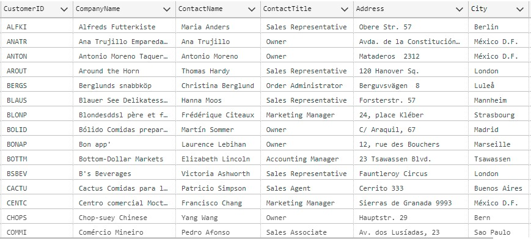
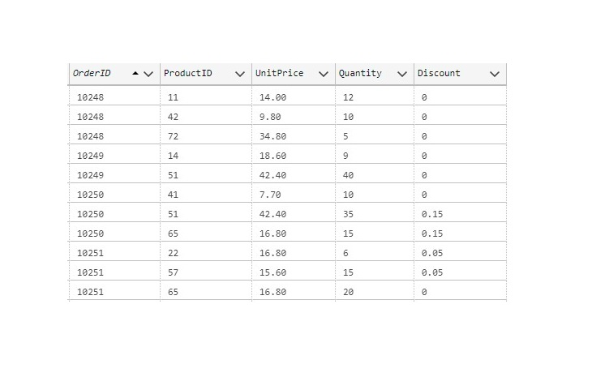
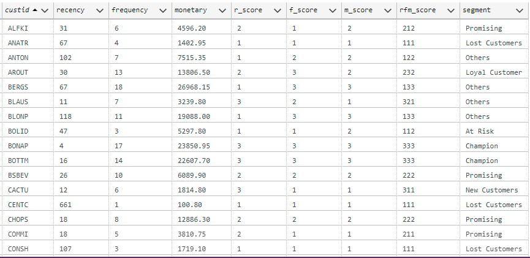

Customer analysis using RFM based segmentation
1. Background
This project demonstrates how to perform customer analysis on a historical, transactional database using the RFM based segmentation. RFM stands for Recency, Frequency and Monetary, which is one of the common techniques used in CRM to category customers into similar and different groups. This project utilizes Northwind database, the popular sample was originally created by Microsoft. Asuze Data Studio and Python are used to create RFM metrics, scores, analysis and visualization.
2. Dataset introduction
The Northwind database contains sales data for a company called Northwind Traders, which imports and exports specialty foods around the world. This sample database was originally come with Microsoft Office suite, but Microsoft also shared the script to create a Northwind data sample in SQL Management tool, which can be accessed via this link. For RFM analysis, this project ultilizes the script to create a sample database and only use three main tables such as: Customers, Orders and Order Details.
Example of Northwind Customer table
{kind=link}
Example of Northwind Orders table

Example of Northwind Order Detail table
{kind=link}
3. RFM Analysis
3.1 What is RFM Analysis
RFM (Recency, Frequency, Monetary) analysis is a marketing technique to explore the behavior based customer segmentation, in which this technique combines three different factors to rank each individual customer, and assign them into various segments. This can help the company in arranging appropriate treaments for each group of customers, such as offering incentives for VIP customers, promotions for loyal customers, and separate plans for those who are at risk of being lost as they haven't purchased a long time ago. The three factors are defined as following:
- Recency: how long (many day ago) a customer has purchased? 1 day ago, 14 days or 100 days ago?
- Frequency: how often (many times) they purchased? It can be how many orders over a defined period
- Monetary: how much the customer spent? It can be total sales from all transaction over a defined period
3.2 Calculating RFM scores
Different businesses can define a scale of scores, for example, a score of 1 to 3 can be assigned to each factor recency, frequency and monetary, in which 3 is the best/highest value and 1 is the worst/lowest value for measurement. A final RFM score is calculated by combining three value of R/F/M above.
Example of FRM scores table
{kind=link}
Given the valuation date of 10 May 1998, a customer with ID of "ALFKI" has purchase 31 days ago, this customer has placed 6 orders and total sales is roughly 4,596$, the R/F/M scores are 2/1/2 respectively. First, the recency of all customers are sorted in ascending order, then the top 1/3 part of the list will be assigned 3 (highest score), the next 1/3 part and the last 1/3 part will have 2 and 1 (lowest score) respectively. Frequency and Monetary are done using the same logic but in descending order. This is because the more frequent and larger sales will likely represent a loyal customer.
The approach above divide the customer list into 3 tiers, it also can be divided into 4 tiers (quartile), or 5 tiers (quintile) or percentile depending on the modelling requirements and business complexity. Another method to define the tiers is using the fixed ranges. For example, if someone purchased within 15 days, assign 3, more than 15 days but less than 40 days, assign 2, and score 1 assign to the rest customers. Frequency and monetary can also be applied this method.
3.3 Segmentation of RFM scores
Given the scale of 3 tiers, total customer segments is 27 (or 3x3x3). Likewise, the case of 4 tiers results in 64 distinct segments (4x4x4). However, it is unnecessary to have so many segments , so marketers should assemble groups of customers and what segments most relevant to the business. Below is a list of customer segements that can be used.
- Champion: who purchase most recently, often and spend most, FRM score 333, 332...
- Loyal customer: who not always spent the most, not quite often but always come back, FRM score 232...
- Potential loyalist: who not purchase quite often but biggest spenders, FRM score 113, 123...
- New customer: who has made initial purchases, either spend most or not, FRM score 313, 312, 311...
- ...
- Lost customer: who hasn't purchased in some time, FRM score 111, 112, 113...
4. Implementation:
In this project, Azure Data Studio is used to connect to SQL Server, first executing the script to create database Northwind, then creating FRM scores based on three tables Customers, Orders, and Order Details. Valuation date is set to 10 May 1998 but can be changed. Python package pyodbc is used to manage the SQL server connection and execute scripts, plotly is used for explanatory analysis and data visualization.
5. Results and Conclusion: